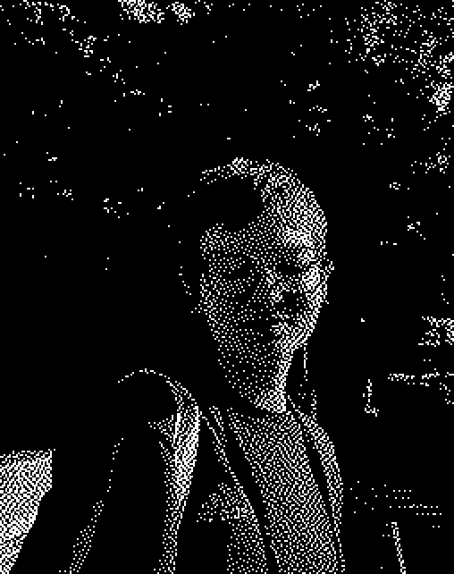

my projects
a dashboard running logarithmic linear regression models every day to predict the e. coli levels at local swimming spots throughout western north carolina. working with samples from Mountain True and accessing USGS data.
analysis of the history and impacts of the flooding of lakes Jocassee, Keowee, and Hartwell using georeferencing techniques to reveal what was there before.
in progress installation piece
interactive data visualization work that will be done in the next three weeks focusing on mapping human impact. it will be projected onto the swannanoa river! i also will have a piece in boom boom barns in a couple months that will be added here soon. (im sure itll also be data visualization)
my senior thesis
this will be updated when i actually do it!
my collaborations
pension fund scraper

collaborative scraping project with Warren Wilson students and professors to add foreign pension funds to Inclusive Development International's shareholder tracker.
about me

hi! i am a senior at Warren Wilson College, majoring in data science and minoring in math and art.
i am a blacksmithing crew lead and i'm always busy doing something or other.
in my free time i like to sew, bake, be outside, hyperfocus on a random aspect of technology
(recently it has been 3D scanning objects or touchdesigner), be with my girlfriend,
or watch criminal minds with my roommates.